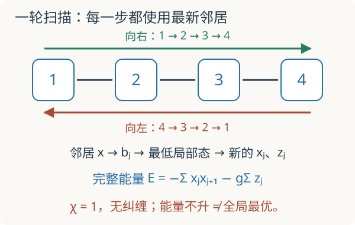

本页目录
基础衔接 08 · 一次完整扫描：四自旋乘积 MPS 的能量账本
先修：MPS 范数与局部优化、张量网络、Ising 自旋矩阵。本讲完成键维 χ=1 的一次真实往返优化扫描。固定四站、开放边界、Pauli 本征值 ±1、J=1；它不是一般键维的 DMRG 实现。
1. 局部题会做了，为什么还要来回扫描？
上一讲把固定环境下的更新写成 \(H_{\rm eff}a=ENa\)。但更新一个站点以后，它又成为相邻站点的新环境。若每个站点只用最初的邻居，就没有实现依次使用最新信息的扫描。
我们选择最小、能把每一步都列出来的 MPS 家族：
每个 MPS 张量只是两个数，虚拟键的维数 χ=1，没有跨切口纠缠。这里 \(\phi_j\) 是 Bloch 球角度，态振幅中出现的是半角。定义
实验从统一的 \(\phi_j=\theta\in[0,\pi/2]\) 出发，允许更新后各点角度不同。正的横场和非负的初始 x 分量使这个区间在本实验更新下保持不变；这并不枚举所有复数 MPS。
2. 先写整个态的能量，再提取一个局部问题
四站开放链 Hamiltonian 是
这里只有三条键，没有 \(X_4X_1\)。因此不能直接使用周期链那一讲的基态数值作为参照。由于是乘积态，跨站期望值因子化：
固定除 j 以外所有站点，将含 j 的项收集起来：
所以局部两维 Hamiltonian 为
左右环境各只有一个归一态，中心的两个基态 \(|0\rangle,|1\rangle\) 也正交，因此本例局部范数矩阵正好是 I。省略 N 在这里有明确理由。\(E_{\rm env}\) 是固定常数，它不改变最优局部向量，但报告完整能量时必须加回。
3. 更新式来自 Cauchy–Schwarz，不是经验调参
令 \(r_j=\sqrt{b_j^2+g^2}>0\)。单位 Bloch 向量满足
等号在两个向量同向时达到，故局部最低态的期望值为
这也对应 \(h_j\) 的最低本征值 \(-r_j\)。若要恢复张量，取 \(\phi_j^{\rm new}=\operatorname{atan2}(b_j,g)\)，再写半角的两个振幅。
更新前后的完整能量差为
因为其他站点固定，\(E_{\rm env}\) 抵消。这证明一次精确局部更新不会升高能量。它不证明同时更新所有站点、加入截断或带误差求解时仍有同样保证，也不证明多次更新后的极限是全局最优。
4. 把一轮定义清楚，再看八次更新
本讲一轮往返扫描固定为
转向时重复端点，所以一轮恰有八次局部求解。第 5 次的环境与第 4 次相同，状态已经局部最优，因此能量不变；相邻两轮之间重复站点 1 同理。实际程序可以省掉这些重复，我们保留它们是为了让扫描顺序可逐项核查。

默认 g=1、初始 θ=30°，故全部 \(x_j=1/2,z_j=\sqrt3/2\)，
第一站只看一个邻居，\(b_1=1/2\)，得到
第二站必须使用刚更新的 \(x_1\)，所以 \(b_2=1/\sqrt5+1/2\approx0.947213595\)，而不是仍取 1。以此向右再向左，完整账本为：
| 步数 | 更新站点 | 更新后的完整能量 |
|---|---|---|
| 0 | 初态 | −4.214101615 |
| 1 | 1 | −4.216110200 |
| 2 | 2 | −4.253871768 |
| 3 | 3 | −4.346613279 |
| 4 | 4 | −4.357140838 |
| 5 | 4 | −4.357140838 |
| 6 | 3 | −4.358608427 |
| 7 | 2 | −4.372742052 |
| 8 | 1 | −4.397398410 |
两轮后能量约 −4.403606895。完整 16 维自旋矩阵对角化给出同一开放模型的基态能量约 −4.758770483；两者还差约 0.355163588。实验中的精确参照独立构造全部自旋矩阵，不用乘积态能量公式伪造。
先预测：把初始角改为 0°，增加轮数能让状态离开原地吗？默认 g=1、θ=30°、两轮；首轮八次更新见上表。图绘制全部更新，表格保留首轮账本；两轮后的局部更新残差约 0.006576565，能量差约 0.355163588。横场范围 0.2 到 2，轮数 1 到 8。
5. 一个反例：每点都已经最优，整体却还可以更好
令全部 \(\phi_j=0\)，即 \(x_j=0,z_j=1\)。每个站点看到 \(b_j=0\)，局部最低态仍为 \(|0\rangle\)。不管扫描多少轮，都停在
但 g=1 时，让四个角一起变成小的正数 φ，得到
所以足够小的非零 φ 会降低能量。这个状态虽对任一单站点变化都已最优，却不是联合变化下的局部最小值。这是坐标优化会停住的具体机制；不能把“所有单点题都做对”自动提升成“整体已解对”。
也可不使用渐近展开：统一 θ=30° 的能量 −4.214101615 已低于 θ=0° 的 −4。两个都是 χ=1 的合法态，所以这个失败不能全部归咎于表达能力不足。
6. 收敛、表达误差和全局最优分别检查
实验显示两类停止信号：最后一轮能量下降，以及局部更新残差
它在扫描结束后的同一组邻居上统一计算。接近零表示再做单点更新改变很小；不代表真实态已接近精确基态。上节 θ=0° 的陷阱就有严格零残差。
有精确基准时比较 \(E-E_0\)；没有时，要结合多个初值、增加键维、能量方差和其他可观测量检查。即使能量很稳定，仍可能有有限 χ 的表示误差。反之一次扫描后的能量差也混合了尚未收敛和表示限制，不能仅凭这个差就把两种误差分别定量。
在一般 χ 的 MPS 中，本讲的邻居标量会被左右环境张量替代，局部向量有约 \(d\chi_L\chi_R\) 个分量。还需维护正交中心、实现有效 Hamiltonian 作用、更新环境；若做两站点更新与 SVD 截断，还要记录截断误差。完成 χ=1 扫描是这条算法链的可核查第一步。
7. 两道迁移题
题一。 默认第一站更新后，为何不能直接把局部本征值 \(-\sqrt{1.25}\) 报作四站能量？请算出此时的环境常数。
把没有含站点 1 的项加回来
固定其他三个站点的 x=1/2、z=√3/2，未涉及站点 1 的两个键贡献 −1/2，后三个横场贡献 −3√3/2。因此 \(E_{\rm env}=-1/2-3\sqrt3/2\)，加局部最低能 \(-\sqrt5/2\) 得 −4.216110200。边界站点只有一个邻居；误加第四到第一的键会换成周期模型。
题二。 g=1、θ=0° 时扫描能量完全不变，局部残差为零。能否据此宣布 χ=1 家族已达到最优，或者宣布 χ=1 是唯一误差来源？
先在同一表示家族内寻找反例
不能。统一 θ=30° 仍是 χ=1 的态，能量 −4.214101615 已低于 −4；联合微小转动也可降低能量。这里首先存在优化陷阱。即使换初值后得到更低、稳定的乘积态，也还需与更丰富表示和基准比较，才能区分剩余误差。
速查与原始阅读
固定环境 → 计算邻居场 b_j → 解 2×2 局部题 → 用最新结果更新下一站 → 记录完整能量 → 往返并检查停止信号。本讲明确 χ=1、开放边界、统一能量单位。一般 MPS 扫描与环境张量见 Schollwöck 综述。返回张量网络。核查：2026-09-08。